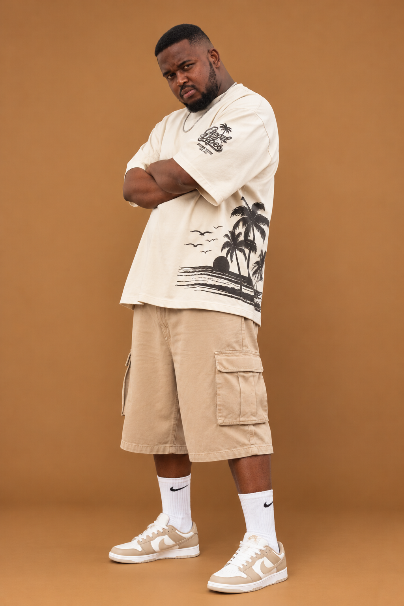

Artist profile · 01DJ · Producer · Durban
DJ Nerd Zar
DJ Nerd Zar is a music artist and DJ creating energetic records connected to Durban’s dance scene. His catalogue includes “Durban Motion,” “Like Me,” and “My Barber,” alongside collaborations such as “Awunamali.” His sound is part of the wider FORGOTTEN SOULs journey: locally grounded and open to what comes next.
TIDAL ↗Apple Music ↗YouTube ↗